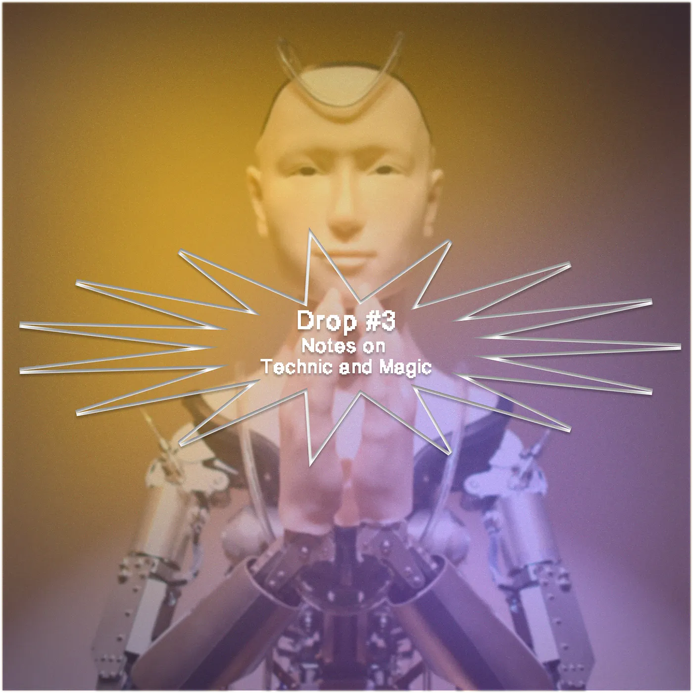
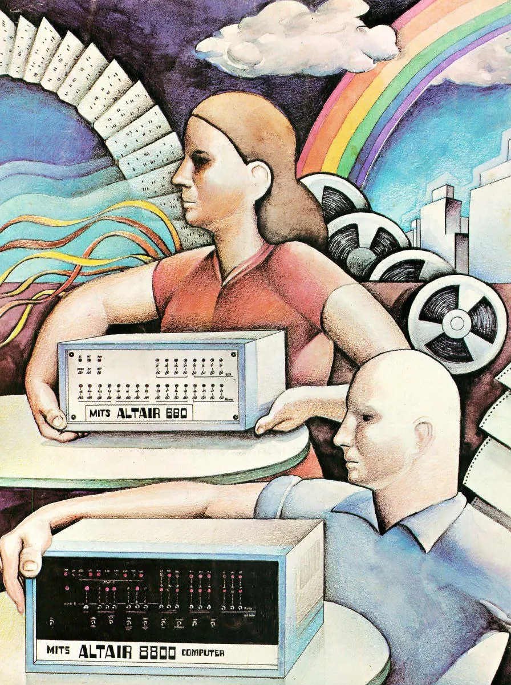
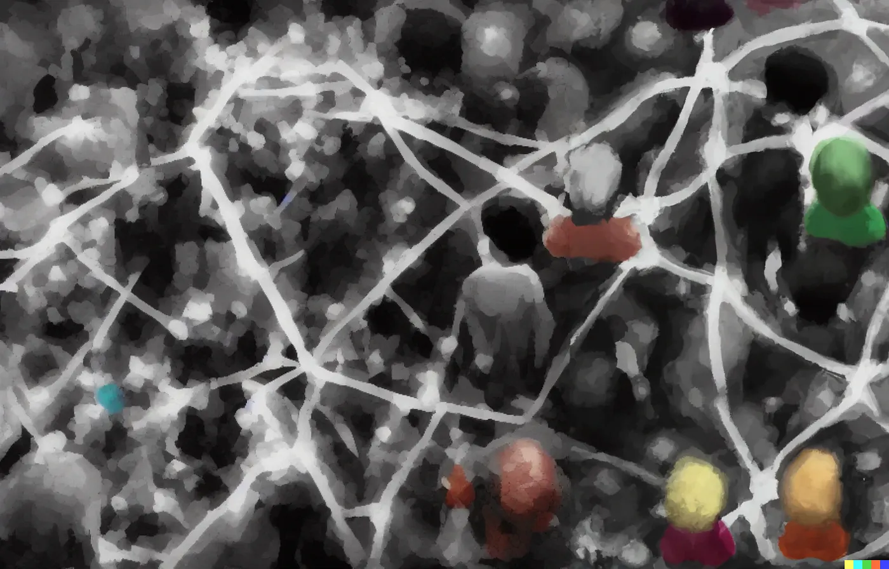

Drop #3 · July 25, 2023 · 8 min read
On two modes of action
Hey everyone (▰˘◡˘▰)
Sorry for the monthly radio silence. Once again, life happened. Anyway, I’m back with a more philosophical piece, bridging recent considerations with a more classic theoretical apparatus. I've been wanting to write about these ideas for a while now, and I couldn't hold back any longer. It's not a complete essay, just a beta version, but I wanted to get it out there and start a chat about it. Hope you enjoy reading it and spark a conversation!

When I started REINCANTAMENTO in the spring of 2020, my main inspiration was the book Technic and Magic by the Italian philosopher Federico Campagna. Later that year and up until ‘22, me and my friends wrote extensively about the ideas of the volume. You can find some examples - Italian only - here, here, and here. Tecnic and Magic is a philosophical book, engaged in that ambitious effort that is metaphysics, and yet, it always maintained, in my eyes, a certain degree of accessibility. It’s a book that impacted my life, and I can’t say the same for the many theory volumes I went through in my student years.
Although, fortunately, I am not here to talk about Campagna’s book again, I want to use its title as an inspiration for some observations I accumulated last year, particularly since I moved back to Berlin.
Most people around me or my extended network, which is inevitably a bubble, are unsatisfied with the current lifestyle promoted by late Western capitalism. Without over-analyzing the present moment, the combination of the climate crisis, economic uncertainty, tearing inequalities, and the fog of war that fell onto Europe, is not bringing up hopes for the future. It has been defined, somehow euphemistically, as Polycrisis. Everything seems unstable and almost ready to fall while also appearing immutably equal. A runaway train heading toward a ravine; the passengers know they are moving there but they don’t know how to stop it. Talking about locomotives, Walter Benjamin once said: “Perhaps revolutions are not the train ride, but the human race grabbing for the emergency brake”. The funny thing is that, in the suspended spring of three years ago, grabbing that brake was considered an almost reasonable idea. We were saying: no volveremos a la normalidad porque la normalidad era el problema (we will not go back to normal). It was a fair point, yet, here we are.
However, the train’s passengers are not standing still; they - we - are frenetically engaged in several activities fueled with the hope of making an impact, somehow affecting the path. It seems to me that all around me people who feel unease with the 'present state of things' are drawn to two main spheres of action, that we may define, inspired by Campagna’s book, Technic and Magic.

What I mean here is that, in 2023, people seem to be attracted primarily to two ways of engaging the world: either by applying technological innovation (Technic) or by embracing some form of spirituality (Magic). On the one hand, AI enthusiasts convicted that automation will save social welfare; on the other hand, the proliferation of pseudo-shamans organizing cocoa ceremonies to find their place in the cosmos. Privacy activists, cryptographic zealots, coexist with novel astral chart interpreters. DAOs advocates and yoga teachers. Metaverse pioneers and Chinese medicine practitioners. The list could go on. This duality does not represent an opposition. Techno-believers and spiritual seekers are similar in some regards. Firstly, the fideistic approach: these modes of action are driven by a sentiment of strong trust, that can culminate in pristine faith. While this fact may seem obvious when we reflect on spiritual and esoteric practices, tech appears to have little to do with faith. However, as noticed by Erik Davis in his iconic book Techgnosis, this is only one side of the story: myths, religious drives, and beliefs are not disappearing due to the expansion of technological rationality, they are prospering in this acceleration. Wassim Z. Alsindi recently published an article on the prophet motives emerging in the crypto space; Finn Lobsien stated that “crypto is a religion”, arguing that the following characteristics - among others - resemble holy formations:
Moral compass: Decentralization is the absolute Good, centralization is the Evil (and variations).
Quest for a promised land: Crypto believers strive for an ideal world with digital-native countries, freedom to live as desired, lack of unwanted authorities, and ideological alignment.
Origin story: The mysterious identity of Satoshi Nakamoto and the untouched Bitcoin fortune contribute to the notion of purity and a founding narrative.
Building on these assumptions, crypto-technologists identify a technical artifact as a salvific tool that restores the ability to impact the world. The same process is visible in the AI industry, which produces multiple para-spiritual attitudes like Ray Kurzweil’s Singularity, a ‘church of AI’ and robotic priests. Especially since ChatGPT’s Conception, these beliefs are popularized and are trickling down in the general public. OpenAI’s chatbot has been used to produce Feng Shui divination or to write sermons. More generally, the trust attached to ChatGPT, with people following its words on sensitive topics like health advice, shows how we quench our thirst for answers and meaning with the mediation of a technological artifact.
However, it’s necessary to ground these beliefs in their material context. As Alsindi puts it, the prophet motives are often obscuring profit motives. In a hype-driven economy, where expectations and promises find an equivalent in market capitalization, pushing innovation with religious fervor is also a business strategy. Self-fulfilling prophecies, or more philosophically hyperstitions, are manifesting growth and market expansion without considering real-world conditions. An example of this, devoid of spiritual components, is Andreessen Horowitz’s report - a notorious venture capital firm - ‘State of Crypto 2023” that has been brilliantly dissected by journalist Molly White: “They [Andreessen Horowitz] want people to keep buying crypto, and are not above publishing blatant falsehoods to convince them to do so”. Horowitz’s predictions and analyses have no other meaning but to ensure the market’s trust. They work on what has been defined by sociologist Elena Esposito as second-degree observations: namely, not empirical estimates of a commodity, but calculations on the imagined valuations of other players in the market, which ultimately causes unpredictability.
Although these beliefs can manipulate the economy, they also are an earnest attempt in creating communities. In an ever-atomized society, a shared interest, that we believe can improve our lives and the world, functions as a gravitational point, attracting different people and establishing relationships. As noticed by the anthropologist Elémire Zolla:
It is no coincidence that mysticism often leads to the creation of new communities within the state or on its margins: convents, associations of anchorites aimed at restoring the conditions of a more archaic and different community, devoted to the cultivation of the garden, to activities that in an urban world replace the happy gleaning of the tribes: […] the fusion of wills in the vow of obedience
Being a blockchain-based collective or a tantric yoga group, these communities cement cultural codes, a common language, and a mission toward the external world. Having a community restores a sense of belonging and reduces the uncertainty about the future that dominates our time. More and more of these groups prosper around a specific spiritual practice or a new piece of tech.

This is not the place to discuss whether these activities are loyal to their promises. I’m more fascinated by our voracious hunger for meaning, and how this can equally absorb tech innovations and millenarian traditions and turn them into orientational tools for the New Dark Age. I believe that it is precisely in light of these common characteristics that animate technological communities and magical communities that we can understand the lack of a clash between rationalists and - I use this term for simplicity's sake - irrationalists. Spiritual practices - astrology, numerology, the tarots, etc - are on the surge everywhere, becoming culturally relevant and economically profitable, and also more and more accepted. There seems to be little to no conflict with hyper-rationalistic and quantifying approaches to realities, like the one of machine learning or blockchain. Technic and Magic are coinciding.
One last note. It is also my opinion that these new forms of action and participation, in reality, are prospering due to the decline of the classic mode of action of the last century: politics. If once people believe in politics, either in terms of collective emancipation or protection of their nation, most of them now believe in technological fixings to the mess we made or in enlightening methods to better survive in this shit. The embracement of these new models correlates to the increasing delusions towards the established tunnels of action, activism, or democratic politics. It's important to not forget how crypto was born out of the delusion of Occupy Wall Street or how the pandemic, with its dominant sense of impotence, alimented the popularity of horoscope and related practices.
Either way, the political urge and the desire to impact the real has not disappeared but only sublimated through other means. I believe that from these new intersections, the politics of the future will arise, and learning to navigate the spaces of Technique and Magic becomes increasingly important. The new spirituality and technical tools are not merely ornaments but fundamental constituents of any politics to come.
If you like DROPS and you want to see it growing, please consider sharing and supporting ^_^